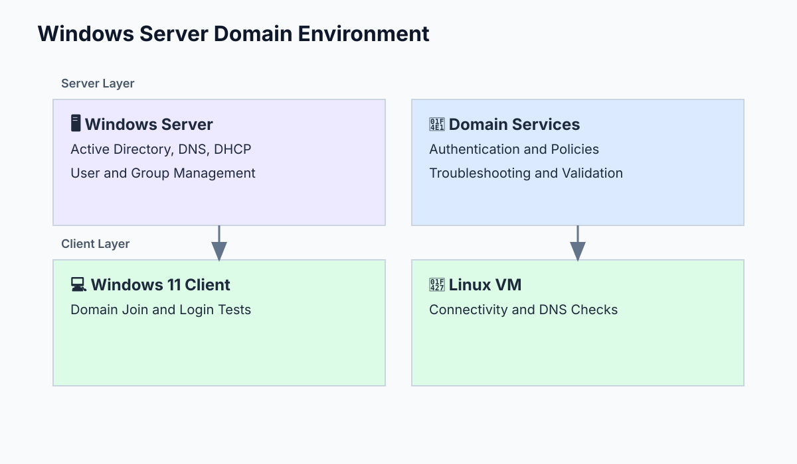
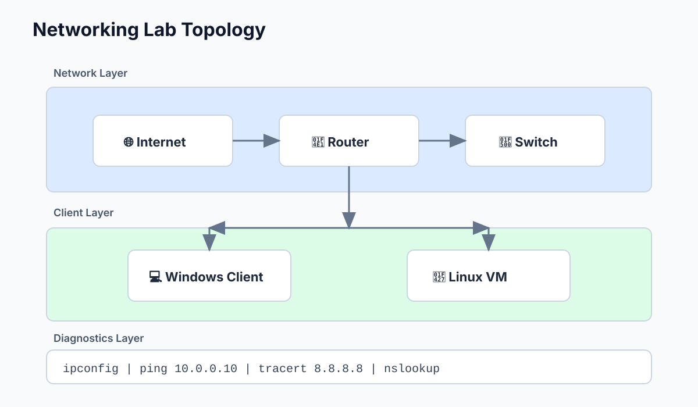
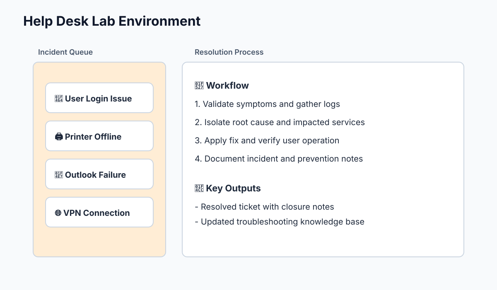
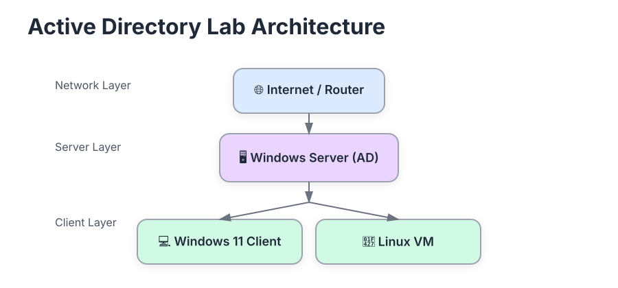

IT Support Technician Portfolio
Emilio Tavares
IT Support Technician
Troubleshooting • Networking • System Administration
Introduction
Hello, my name is Emilio Tavares. I am an aspiring IT Support / Help Desk Technician with
hands-on experience troubleshooting computer systems, repairing hardware, and diagnosing technical issues
across Windows, Linux, and macOS environments.
Core Skills Summary
- Hardware troubleshooting and repair
- Operating system installation and configuration
- Desktop PC building and upgrades
- System performance optimization
- Network troubleshooting
- Remote technical support
Career Objective
I am currently focused on developing my skills in IT support, system administration, and networking,
with the goal of working as a professional Help Desk or IT Support Engineer.
Currently Learning
- Windows Server Administration
- Network troubleshooting
- Linux system administration
- IT automation with PowerShell
Technical Skills
Operating Systems
Windows 10/11, Linux (Ubuntu, Debian), macOS support and troubleshooting.
Hardware Support
Desktop builds, laptop diagnostics, SSD/RAM upgrades, component troubleshooting.
Mobile Device Repair
Smartphone diagnostics, basic repair workflow, software issue resolution.
Help Desk & IT Support
End-user support, incident documentation, remote and on-site troubleshooting.
Remote Support Tools
TeamViewer, AnyDesk, Windows Remote Desktop.
Ticketing Systems
Jira Service Management, ticket lifecycle handling, clear closure notes.
Microsoft Technologies
Microsoft 365 troubleshooting, Outlook setup, Teams support.
Active Directory
User creation, password resets, group management basics.
Networking
LAN, DNS, DHCP, IP configuration, VPN troubleshooting.
Command Line Tools
ipconfig, ping, tracert, netstat, sfc /scannow, Linux terminal diagnostics.
Security Fundamentals
Malware detection, antivirus setup, password security, phishing awareness.
IT Troubleshooting Framework
This framework uses eight structured phases to investigate, diagnose, and resolve technical issues while
reducing downtime and improving documentation quality.
01
Identify 🔍
Gather issue details, symptoms, timeline, and impact from users or monitoring systems.
02
Reproduce 🧪
Replicate the issue to confirm behavior and understand trigger conditions.
03
Isolate 🎯
Define scope and boundaries to determine affected components, users, or services.
04
Diagnose 🧠
Analyze logs, configurations, and component behavior to identify likely causes.
05
Root Cause Analysis 📊
Confirm the underlying source of the incident before applying remediation.
06
Resolve 🔧
Apply the fix through configuration updates, software changes, service restarts, or hardware replacement.
07
Validate ✅
Verify the issue is resolved, test related services, and confirm restoration with the user.
08
Document 📝
Record root cause, actions taken, and resolution details for future reference.
Benefits of the Framework
- Faster identification of issues
- Reduced downtime
- Consistent troubleshooting methodology
- Improved knowledge sharing
- Better documentation for future incidents
Use Cases
- Hardware failures
- Network connectivity problems
- Software errors
- System performance issues
- Authentication and access problems
Common IT Issues I Troubleshoot
- Slow computer performance
- Operating system errors
- Software installation issues
- Printer connectivity problems
- Email configuration issues
- Internet connectivity problems
- Network configuration errors
- Hardware failures
Certifications In Progress
- CompTIA A+
- Networking Fundamentals
- Windows Server Administration
Learning Roadmap
Currently Learning
- Windows Server administration
- Networking troubleshooting
- Linux system administration
- PowerShell automation
Future Goals
- CompTIA Network+
- System administration roles
Recent Technical Activity
- Built a Windows Server Active Directory lab.
- Practiced troubleshooting DNS issues.
- Optimized computers by upgrading SSD storage.
- Repaired smartphone hardware components.
Lab Documentation
You can view my IT lab documentation and troubleshooting notes on GitHub.
github.com/Tavareserp
Topics documented:
- Active Directory setup
- Networking lab configuration
- Troubleshooting notes
- Command line diagnostics
My Approach to IT Support
I believe effective IT support requires both technical knowledge and strong communication skills. My approach
focuses on diagnosing the root cause of technical issues, implementing reliable solutions, and clearly
explaining solutions to users in a way that improves their understanding and confidence with technology.
IT Projects

Virtual domain setup for AD administration, account policies, and client validation.
Windows Server Home Lab
Built an AD domain environment and practiced user, group, and client domain tasks.
Learn More

Topology used to practice connectivity checks, DNS diagnostics, and routing validation.
Networking Lab
Configured DNS/DHCP scenarios and validated connectivity with CLI troubleshooting commands.
Learn More

Ticket simulation workflow focused on triage, root-cause analysis, and resolution notes.
Help Desk Ticket Simulation
Simulated incident lifecycle from intake to resolution with structured documentation.
Learn More
Structured validation steps used to improve system responsiveness and reliability.
PC Performance Optimization
Improved startup, hardware performance, and OS health across desktop and laptop systems.
Learn More
Build and support workflow for compatible hardware assembly and post-build checks.
Custom Desktop PC Builds
Designed, assembled, and validated custom systems for reliability and performance.
Learn More
Remote assistance flow covering endpoint access, diagnostics, and service restoration.
Remote Technical Support
Provided remote issue resolution using TeamViewer, AnyDesk, and Remote Desktop tools.
Learn More
Lab Environment

Virtual architecture used to practice domain administration and cross-client troubleshooting tasks.
- Windows Server Domain
- Active Directory
- Windows 11 Client
- Linux VM
- Networking Lab